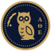

À propos et méthodes

Qui en répond
ATHENA News Room est conçu, développé et exploité par Antonios Vlachos, responsable d'ATHENA INTELLIGENCE - le système qui produit ce site - et qui répond de sa méthode comme de ses résultats.
Le site obéit aux exigences d'un audit plutôt qu'à celles d'une rédaction : chaque chiffre est traçable jusqu'aux articles dont il est issu, chaque méthode est publiée et aucune information ni aucun chiffre n'est retouché à la main ; les avis d'ATHENA News Room sont signalés comme tels et datés. Toutes les quelques minutes, ATHENA lit des centaines de rédactions et de sources officielles, regroupe leurs articles en événements et consigne pour chacun l'ampleur de sa couverture, qui le rapporte, depuis combien de pays, qui l'a rapporté en premier et le risque qu'il comporte. La une, la recherche Demander, l'Analyse par pays, les Marchés, les suivis de risque, les perspectives hebdomadaires, les signaux émergents et le groupe Telegram sont tous produits par le même processus documenté. Corrections et questions sont les bienvenues à l'adresse ci-dessous.
Contact codeforgerpro@gmail.com
Découvrez comment chaque page est produite : sources, événements, les trois chiffres et qui en est responsable. Comment il est produit ›
De quoi s'agit-il
ATHENA News Room est un service automatisé de veille et d'analyse de l'actualité, et non un journal : il ne publie aucun reportage propre. ATHENA INTELLIGENCE suit en continu la presse anglophone du monde entier — des centaines de rédactions vérifiées et d'organismes officiels de toutes les régions — et consolide les articles de rédactions indépendantes en événements. Chaque événement est classé dans l'un de dix domaines et évalué selon trois mesures publiées — l'importance, le risque et la confiance —, les éléments derrière chaque chiffre étant visibles et chaque article relié à sa source.
Édition de test
Ce site est en phase de test. Il est généré automatiquement ; son contenu et ses fonctions peuvent changer et contenir des erreurs. Ce n'est pas une version officielle.
Ce que publie le site
- Événements et synthèses — la une, les dix rubriques, le point du jour, Demander et la Carte mentale.
- Analyse par pays — chaque pays dans l'actualité, avec ses événements vérifiés et son risque.
- Local et Maritime — l'information locale par pays, ainsi que le transport maritime et les points de passage.
- Marchés — dans la rubrique Économie et Marchés : le sens d'évolution des indicateurs officiels des marchés (direction seulement ; aucun prix), avec l'actualité des marchés.
- Signaux, alertes et suivis — signaux émergents, alertes officielles, suivis de risque et perspectives.
- Avis — annonces et corrections d'ATHENA News Room, signalées comme telles et datées.
Comment lire les chiffres
- Importance (0–10) : le poids d'un événement selon sa portée — combien de pays et de médias différents le couvrent, à quelle vitesse il se diffuse, à quel point il est nouveau.
- Risque (0–10) : le dommage potentiel décrit par la couverture — gravité, urgence, effets en cascade. Un indicateur analytique, pas une probabilité.
- Confiance (%) : la solidité de l'événement — confirmation par des médias indépendants, fiabilité des sources, stabilité.
Limites
Il mesure la couverture, pas la vérité : uniquement la presse anglophone et uniquement les sources lues par ATHENA. Les méthodes sont provisoires et transparentes.
Mentions légales
Les titres et les liens appartiennent à leurs éditeurs ; chaque titre mène à l'article original. ATHENA ne reproduit aucun texte d'article. Les alertes officielles proviennent des autorités qui les émettent. Ce site n'utilise pas de cookies. Les visites sont comptées anonymement, sans cookies et sans données personnelles (GoatCounter).
Comment ATHENA publie l'actualité
ATHENA repose sur un principe : montrer ce que rapportent des rédactions indépendantes, et les éléments derrière chaque chiffre. Cette section explique ce que nous publions, comment une information arrive sur le site et pourquoi.
1. Collecte
- ATHENA lit 474 sources d'information en anglais dans le monde entier, jour et nuit.
- Chaque article est enregistré avec le pays de la rédaction qui l'a publié, les pays qu'il cite et son heure.
- Les reprises d'une même dépêche d'agence (Reuters, AP, AFP…) comptent une fois : dix journaux reprenant une dépêche font une information, pas dix.
- Chaque nouvelle source est testée automatiquement avant d'être activée ; celles qui cessent de fonctionner sont désactivées.
2. Actualité mondiale : des événements vérifiés
- Les articles sur un même fait sont regroupés en un événement, quel que soit le nombre de rédactions qui le couvrent.
- Chaque événement reçoit trois notes, chacune justifiée sur sa page : importance (ampleur et vitesse de la couverture), risque (gravité et urgence du dommage décrit) et confiance (nombre de sources indépendantes et fiables qui le confirment).
- Un événement n'est publié que si, au cours des 48 dernières heures, au moins 2 médias indépendants l'ont rapporté, que son importance atteint au moins 3 et qu'il a une catégorie claire.
- La une présente les 60 événements les plus importants ; chaque page d'événement reste en ligne 14 jours afin que les liens fonctionnent.
- Le site est mis à jour toutes les 15 minutes et seules les pages modifiées sont envoyées. Le groupe Telegram reçoit les événements urgents de risque 6 ou plus, un point horaire et le briefing quotidien.
3. Actualité locale : ce que montre la page de chaque pays
- Son tableau des risques : l'événement vérifié au risque le plus élevé qui concerne clairement le pays, le nombre d'événements à risque élevé et l'état de ses ports et détroits.
- Événements concernant le pays : les mêmes événements vérifiés, filtrés sur ceux qui concernent vraiment le pays (cité dans plusieurs de leurs articles), classés selon leur lien avec le pays et leur importance. Cette liste suit la même règle d'au moins 2 médias indépendants.
- Les rédactions du pays : les titres des 48 dernières heures de médias basés dans le pays, avec un lien vers l'original, dans leur langue et avec une traduction automatique signalée dans la langue de la page. Cette liste n'est pas recoupée : elle apporte la voix et la rapidité locales, et un titre est signalé lorsqu'il est aussi un événement vérifié d'ATHENA.
- Pour une dizaine des médias les plus consultés de chaque pays couvert (UE, Royaume-Uni, États-Unis, G20 pour commencer), le Local Desk d'ATHENA lit les titres dans leur langue et les traduit hors ligne dans les langues du site ; les traductions sont signalées et l'original est toujours affiché. Le point du jour et les principaux sujets sont tirés de ces titres ; chaque média est noté selon son type et son audience.
4. Pourquoi ce fonctionnement
- Deux médias indépendants constituent le minimum de vérification : une information isolée peut être fausse, prématurée ou partiale ; une confirmation indépendante, non.
- ATHENA ne publie un événement que lorsqu'au moins 2 médias indépendants le rapportent. Un pays avec 0 ou 1 source ne peut jamais afficher sa propre actualité locale, seulement des articles internationaux qui le mentionnent. C'est pourquoi nous ajoutons des rédactions testées, pays par pays : chacune rapproche l'actualité locale des événements vérifiés.
- Les titres locaux sont présentés à part et signalés, pour offrir l'immédiateté de l'information locale sans la confondre avec des événements vérifiés.
5. Limites
- Les sources sont en anglais ; les pays ayant peu de médias anglophones sont moins couverts.
- Les lieux et les sujets sont détectés automatiquement et peuvent parfois être erronés.
- Les notes décrivent la couverture médiatique - ni les faits sur le terrain, ni des prévisions ou des probabilités. Titres et liens appartiennent à leurs éditeurs ; ATHENA ne publie aucun texte d'article.